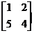
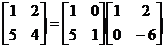

二階矩陣LU分解
程式由網友 basic 提供。
編寫日期: 2012年5月11日
程式可以將個二階矩陣LU。
程式 (40 bytes)
?→A: ?→B: ?→C: ?→D:
1◢ 0◢ C┘A→X◢ 1◢
A◢ B◢ 0◢ D - BX→Y
例題: 求以下三階矩陣的LU分解

按 Prog 1 再按 1 EXE 2 EXE 5 EXE 4
EXE (顯示1) EXE (顯示0) EXE (顯示5) EXE (顯示4)
EXE (顯示1) EXE (顯示2) EXE (顯示0) EXE (顯示 - 6)
因此
